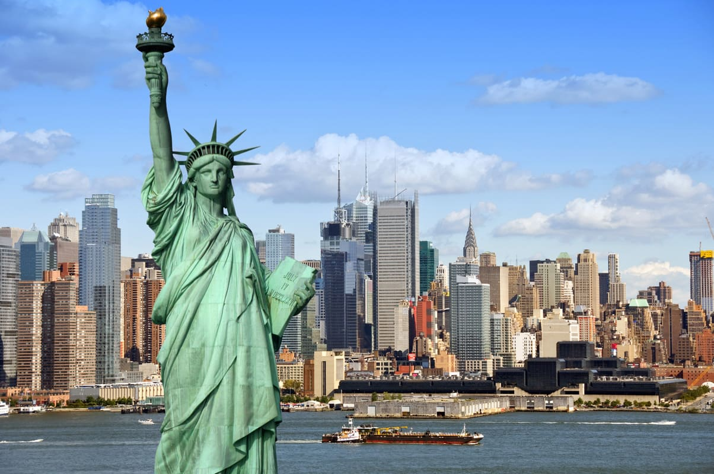
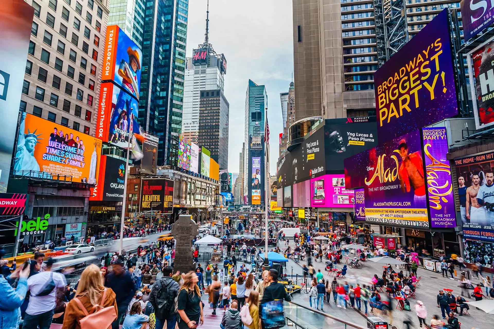
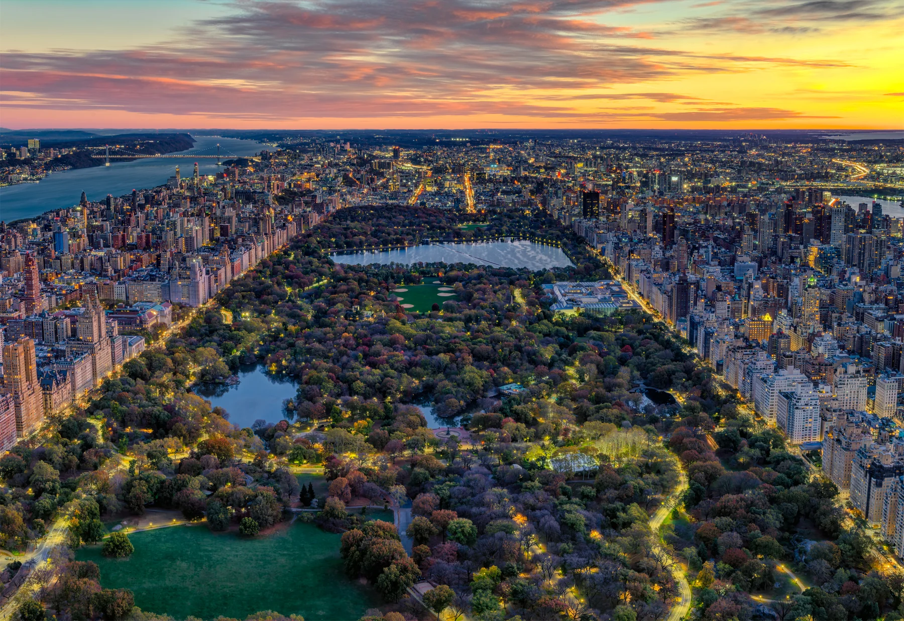

Sobre o destino
Nova York é uma das cidades mais icônicas do mundo, conhecida por seus arranha-céus, diversidade cultural e infinitas opções de entretenimento, compras e gastronomia.
Pontos Turísticos Imperdíveis:
- Times Square: Luzes e movimento 24h.
- Central Park: O parque mais famoso da cidade.
- Estátua da Liberdade: Símbolo dos Estados Unidos.
- Empire State Building: Vista panorâmica incrível.
- Brooklyn Bridge: Caminhada com vista espetacular.
Guia Rápido

Melhor época: Abril a junho e setembro a novembro - sempre com muitos turista durante o ano.

Como chegar: Aeroportos JFK, LaGuardia e Newark recebem voos internacionais.

Idioma: Inglês é o idioma oficial.

Moeda: Dólar americano - cartões são muito utilizados.
Custos Médios
- Hotel: $150 - $500 por noite
- Alimentação: $10 - $40 por refeição
- Transporte: $2.90 por viagem (metrô)
Localização
Galeria de Fotos


